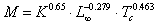
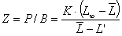
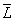

Even if the parameter is labelled ‘production/biomass’ in EwE, what should be entered is actually the mortality rate. An example, if you have a juvenile group and use a bioenergetic model to calculate the production, you should subtract the amount that is recruited to the adult group from the production in order to the actual mortality, which is what Ecosim needs to work with. Production over biomass is entered on the Basic input form. See Mortality coefficients and Predation mortality for description of Ecopath’s estimates of different mortality components in the system.
Total mortalities can be estimated from catch curves, i.e., from catch composition data, either in terms of age-structured catch curves; (Robson and Chapman, 1961), or of length-converted catch curves (Pauly et al., 1995). The estimation can be carried out using appropriate software for analysis, such as the FiSAT package (Gayanilo et al., 1996).
Production rate is the sum of natural mortality (M = M0 + M2) and fishing mortality (F), i.e., Z = M + F. In the absence of catch-at-age data from an unexploited population, natural mortality for finfish can be estimated from an empirical relationship (Pauly, 1980) linking M, two parameters of the von Bertalanffy Growth Function (VBGF) and mean environmental temperature, i.e.,

Eq. 16where, M is the natural mortality (/year), K is the curvature parameter of the VBGF (/year), L∞ is the asymptotic length (total length, cm), and Tc is the mean habitat (water) temperature, in °C .
In equilibrium situations, fishing mortality can be estimated directly from the catch (or more precisely from the ‘yield’, which expresses catches (including discards) in weight):
Fishing mortality = yield / biomass
where the yield is a rate, (e.g., t/km²/year), the biomass lacks a time dimension, (i.e., is expressed as t/km²), and thus the fishing mortality is an instantaneous rate, (e.g., per year).
Beverton and Holt (1957) showed that total mortality (Z = P/B), in fish population whose individuals grow according to the von Bertalanffy Growth Function (VBGF), can be expressed by:

where L∞ is the asymptotic length, i.e., the mean size the individuals in the population would reach if they were to live and grow indefinitely, K is the VBGF curvature parameter (expressing the rate at which L∞ is approached),

is the mean length in the population, computed from L’ upward. Here, L’ represents the mean length at entry into the fishery, assuming knife-edge selection. Note that must be > L’.